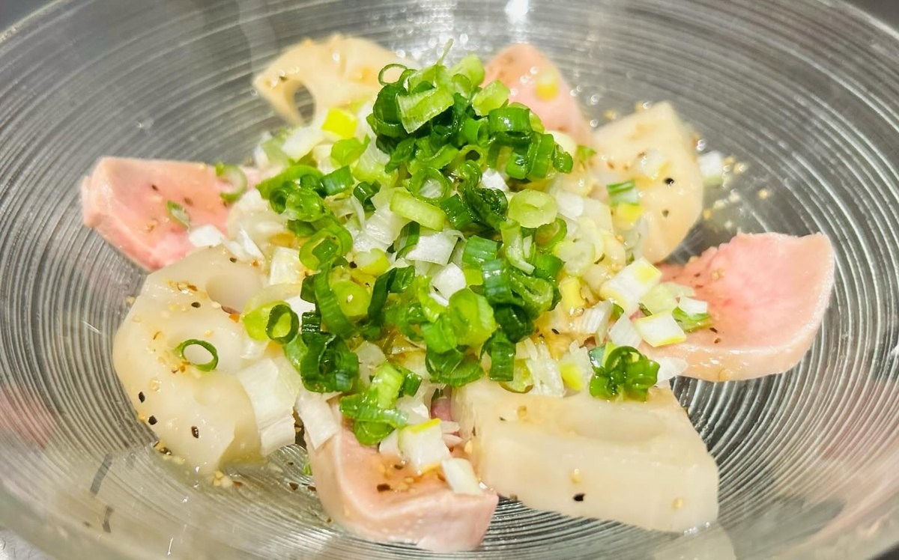
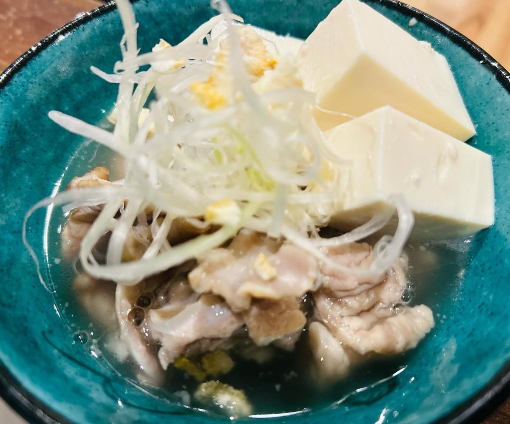
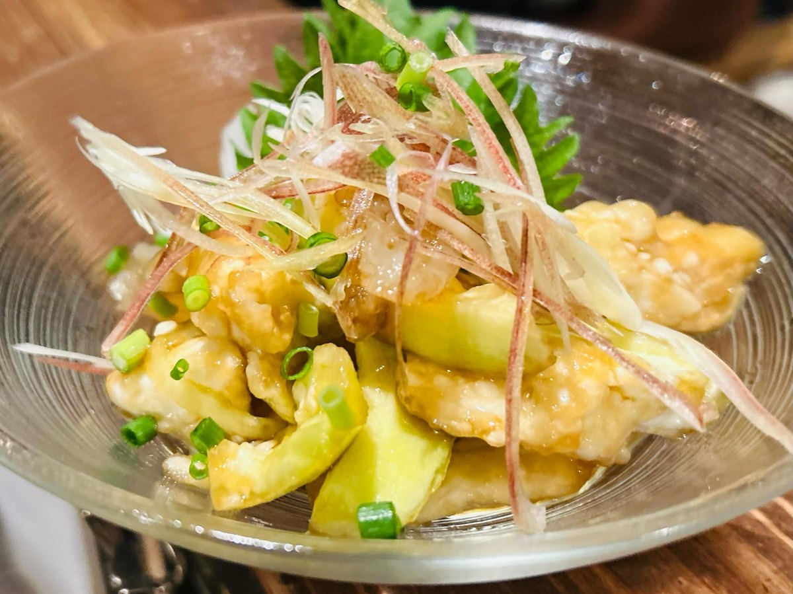
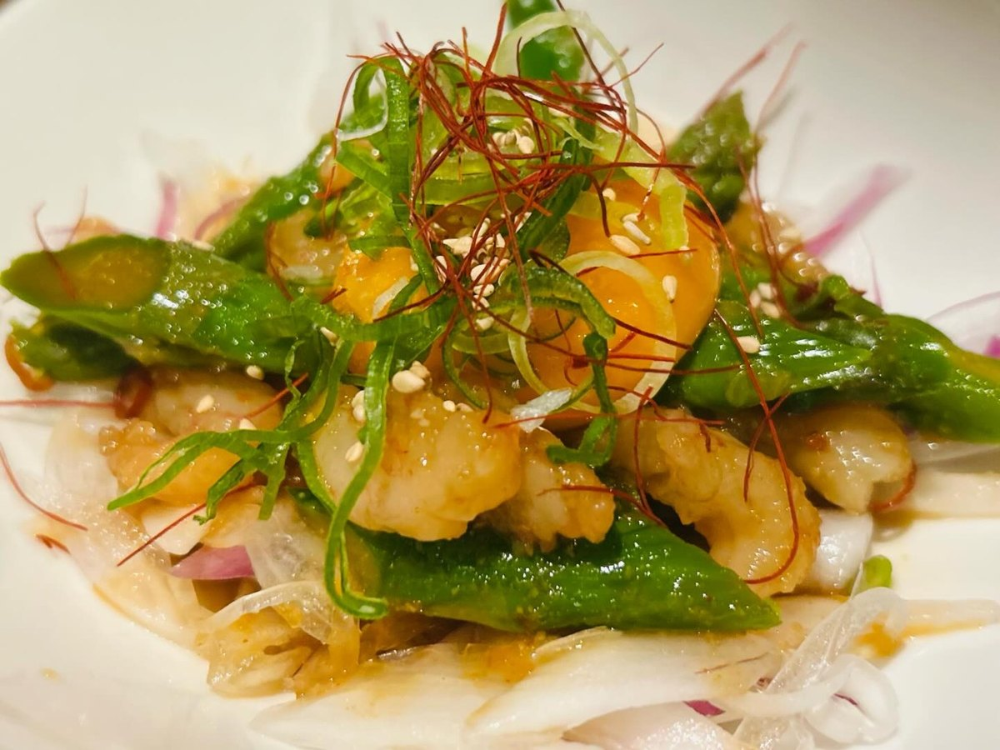
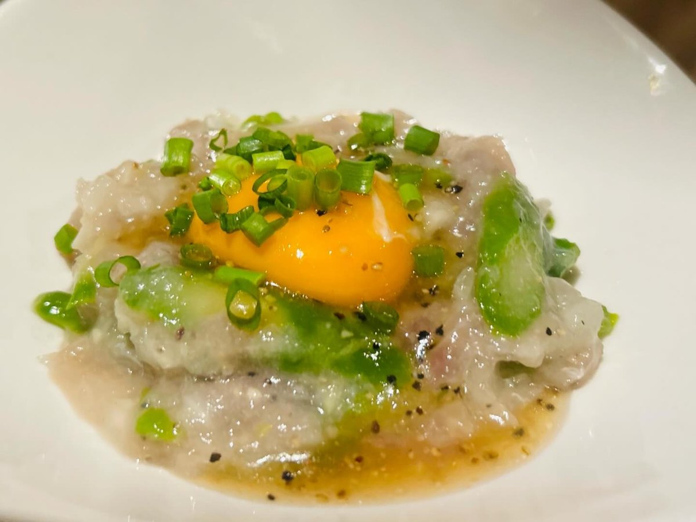
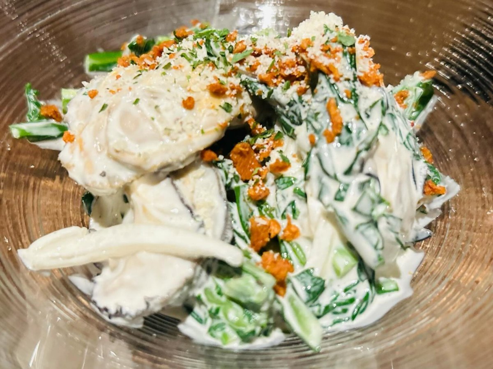
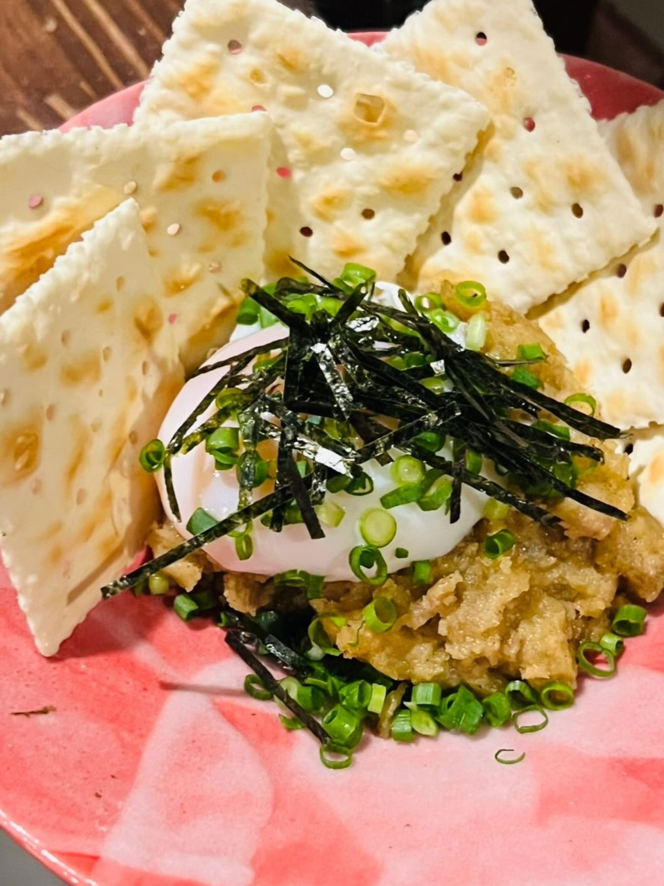
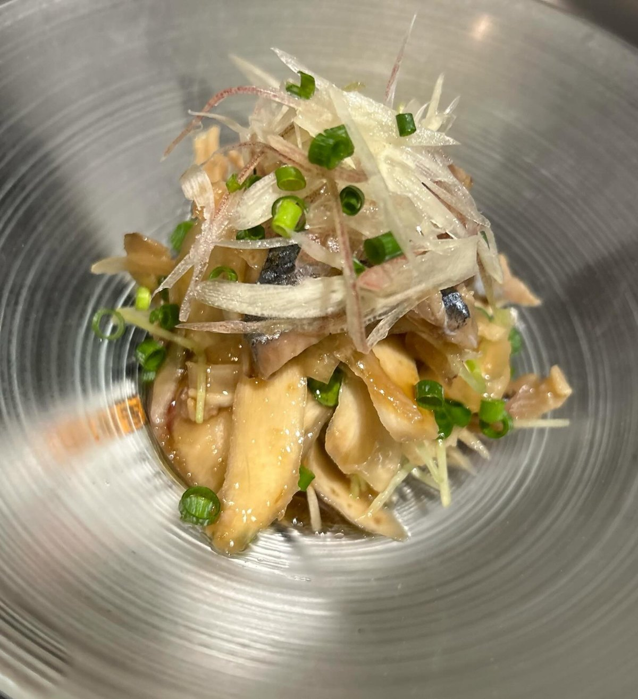

豚上タン刺と蓮根のネギ塩カルパッチョ
豚の上タンと蓮根に、刻んだねぎをたっぷりのせた一皿。お店は「日本酒の肴に是非」と添えていました。
SUMIBI YAKITON — KAMIFUKUOKA
朝〆の豚を、手刺しで。
上福岡駅西口の路地に灯る、備長炭のやきとん屋です。
17:00〜24:00｜金・土・祝前日は深夜2:00まで
カード・PayPay可
ABOUT
上福岡駅の西口から、歩いて二、三分。ラーメン店の脇の路地を入ったところに、カウンターだけの小さなお店があります。備長炭で焼く、豚の串のお店です。
お店のInstagramには「朝〆豚肉 手刺しで仕込んでます 備長炭」とあります。串に添えられる辛味噌は手作りで、無料。お品書きにも「辛味噌付けるのが東松山流」と書かれていて、やきとんの街・東松山出身の大将が焼く一串、というのがこのお店の芯にあるものです。
お客さんのクチコミには「炭火だし素材も良いし、焼き加減も良い♬」「店内はカウンターのみで作りもなかなかオシャレな感じでした。」という言葉が並びます。

めっちゃ美味かったー♪
Googleのクチコミより
A LA CARTE






SHOP INFO
| 店名 | 炭火でやきとん！ガッツマン |
|---|---|
| 住所 | 埼玉県ふじみ野市上福岡5-1-10 長迫ビル1F |
| アクセス | 東武東上線 上福岡駅 西口 徒歩2〜3分 |
| 営業時間 | 17:00〜24:00 金・土・祝前日は17:00〜翌2:00 |
| 定休日 | お電話でご確認ください |
| お支払い | 現金・カード・PayPay |
| 電話 | 049-265-4566 |
CONTACT
宴会コースやご予算のご相談は、お電話が確実です。お店のInstagramでは、その日の一品料理が紹介されています。